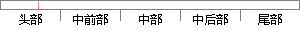

Git另一个比较好的地方在于绝大多数操作都可以在本地执行，而每个本地都可以从服务器获取一份完整的仓库代码，而且在没网的时候仍然可以修改和使用大部分命令，在方便的时候再跟服务器进行同步，这样可以更好的实现多人联合编程。
片段位置图

相似结果|
1
原句片段：Git另一个比较好的地方在于绝大多数操作都可以在本地执行，而每个本地都可以从服务器获
相似片段 1：每次记录有哪些文件作了更新,以及都更新了哪些行的什么内容 Git另一个比较好的地方在于绝大多数操作都可以在本地执行,而每个本地都可以从服务器获取一份完整的仓库...
2
原句片段：取一份完整的仓库代码，而且在没网的时候仍然可以修改和使用大部分命令，在方便的时候再跟服务器进行同步，这样可以更好的实现多人联合编程。
相似片段 1：而每个本地都可以从服务器获取一份完整的仓库代码,而且在没网的时候仍然可以修改和使用大部分命令,在方便的时候再跟服务器进行同步,这样可以更好的实现多人联合...
|
※ 片段修改建议 ※
近似词参考：- 地方：处所
- 操作：操纵
- 本地：当地
- 执行：履行 实行
- 每个：每一个
- 本地：当地
- 获取：获得
- 完整：完全 完备
- 仓库：堆栈
- 而且：并且
- 时候：时辰 时刻 时间
- 仍然：依然 仍旧
- 修改：点窜
- 使用：利用
- 命令：号令 饬令 敕令 下令
- 方便：便利 利便 轻易
- 时候：时辰 时刻 时间
- 进行：举行
- 这样：如许
- 联合：结合 团结
系统自动生成语句：Git另一个比较好的处所在于绝大多数操纵都可以在当地履行，而每一个当地都可以从服务器获得一份完全的堆栈代码，并且在没网的时辰依然可以点窜和利用大部分号令，在便利的时辰再跟服务器举行同步，如许可以更好的实现多人结合编程。
注：本片段修改建议为系统自动生成，仅供参考。